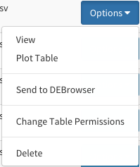

DEBrowser Access Guide¶
This guide is a quick guide for the DEBrowser within dolphin.
Accessing DEBrowser¶
First, make sure to have an instance of dolphin available (see Dolphin Docker) as well as an account for the dolphin interface.
Once logged in, click on the ‘NGS Tracking’ tab on the left, then click on ‘DEBrowser’.

This will bring you to the DEBrowser section within dolphin. This will take you to the base DEBrowser page where you can either try the demo by clicking the ‘Load Demo!’ to load the demo set we have set up or you can load in locally downloaded tsv files for analysis.

You can also load in RSEM results from runs with the corresponding results in a few easy steps.
From Reports:
You can view your RSEM results straight from your selected run’s report page in a few easy steps. First select the run you would like to use and head to that run’s report page within the NGS Run Status page.

Next, select the RSEM tab and then select the file you wish to use within the DEBrowser. Once you’ve selected the file, a dropdown menu will appear and you can then select the ‘Send to DEBrowser’ option.

You will then be redirected to the DEBrowser page within dolphin with that data loaded into the browser.
From Generated Tables:
Additionally, you can load custom-made rsem tables from the generated tables section within dolphin. Any generated table which uses a RSEM file can be used within the DEBrowser.
Simply head to the Generated Tables section within dolphin and select the table you wish to use. Then select the ‘Send to DEBrowser’ option and you will be redirected to the DEBrowser page within dolphin with that data loaded into the browser.
You can also send a table into DEBrowser while viewing the generated table. Just select the Download Type button and then select the ‘Send to DEBrowser’ option.

Additional Information:
Please be patient while the data loads into the Browser for it can take a few seconds before the data is fully loaded and you can run DESeq.
For a more detailed guide on DEBrowser itself, please visit the DEBrowser section.